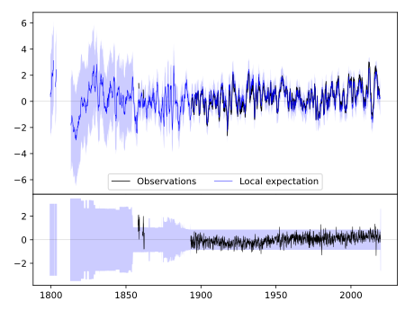
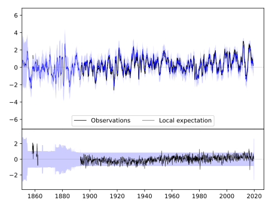

JACKSONVILLE 2E [USA]



| Neighbour | Name | Country | Distance | Lon/Lat | Years |
|---|
| 720095 | JACKSONVILLE 2E | USA | 0 | -90.2, 39.7 | 1858-2019 |
| 720114 | WHITE HALL 1 E | USA | 37 | -90.4, 39.4 | 1854-2019 |
| 720084 | CARLINVILLE | USA | 51 | -89.9, 39.3 | 1891-2019 |
| 720109 | RUSHVILLE | USA | 56 | -90.6, 40.1 | 1889-2019 |
| 720093 | HILLSBORO | USA | 81 | -89.5, 39.2 | 1893-2019 |
| 720288 | BOWLING GREEN 1 E | USA | 96 | -91.2, 39.3 | 1883-2019 |
| 720086 | DECATUR WTP | USA | 103 | -89.0, 39.8 | 1875-2019 |
| 720106 | PANA 3E | USA | 108 | -89.0, 39.4 | 1869-2019 |
| 720096 | LA HARPE | USA | 121 | -91.0, 40.6 | 1893-2019 |
| 720101 | MONMOUTH | USA | 137 | -90.6, 40.9 | 1881-2019 |
| 720115 | WINDSOR | USA | 141 | -88.6, 39.4 | 1885-2019 |
| 720302 | STEFFENVILLE | USA | 148 | -91.9, 40.0 | 1893-2019 |
| 720298 | MEXICO | USA | 156 | -91.9, 39.2 | 1892-2019 |
| 720089 | GALVA | USA | 167 | -90.0, 41.2 | 1862-2019 |
| 720099 | MINONK | USA | 167 | -89.0, 40.9 | 1886-2019 |
| 720082 | ALEDO | USA | 172 | -90.7, 41.2 | 1879-2019 |
| 720112 | URBANA | USA | 176 | -88.2, 40.1 | 1888-2019 |
| 720154 | MT PLEASANT 1 SSW | USA | 178 | -91.6, 40.9 | 1863-2019 |
| 720108 | PONTIAC | USA | 190 | -88.6, 40.9 | 1886-2019 |
| 720103 | MT VERNON 3 NE | USA | 191 | -88.9, 38.3 | 1879-2019 |